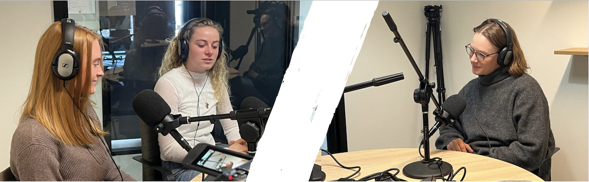

Mad og Medier
I dette afsnit af Athene podcasten er jeres værter Trine Huus og Anne søder, som er studerende på 6. semester Interaktive Digitale Medier på Aalborg Universitet.
Afsnittets gæst er lektor på kommunikation og psykologi Stinne Gunder Strøm Krogager, som forsker i mad og mediers påvirkning af hinanden.
I afsnittet kan du lytte med til en snak om mad og mediers forhold til hinanden. Hun giver et indblik i, hvordan mad og medier har påvirket og fortsat påvirker hinanden, og hvordan man kan bruge forholdet mellem mad og medier til at indgå i fællesskaber, udtrykke politiske overbevisninger og meget andet. Forneden er et lille indblik i podcasten, enjoy! 🍔 🥗
Husk at du kan finde vores podcast og lytte med lige der, hvor du plejer at finde din podcast!🎧 TRYK HER